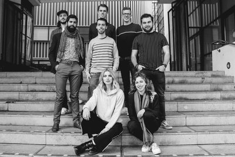
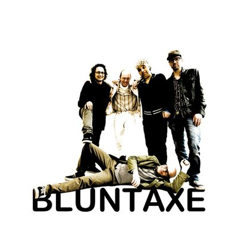

zaterdag
16:00-17:00
SALSA Y SALERO
Salsa y Salero is het Latin ensemble van het Fontys Conservatorium in Tilburg (AMPA). De band bestaat uit studenten van het eerste t/m vierde jaar op de jazz afdeling. Zij brengen u een repertoire van Latin Jazz, Samba en Salsa. Niet alleen de muziek van vroeger, maar ook hedendaagse bewerkingen komen voorbij. Bij de muziek van Salsa y Salero is stilzitten geen optie.



zaterdag
20:00-21:30
Blunt Axe
Deze manisch, allitererende, ratelende, declamerende, bezeten, taalkunstenaar belichaamt de ware freak in ons. ACG Vianen (1972) neemt je mee in zijn bizarre wereld en doet niet aan kontlikkerij. Met zijn band zet hij een performance neer waar je je knokkelige vingers bij af kan likken.
zaterdag
20:30-21:30
JazzAcademy
JazzAcademy is zeven jaar geleden opgezet door de Bossche trompettist Jeroen Doomernik vanuit de stichting Jazzwerkplaats. Veel jonge muzikanten hebben in de JazzAcademy al de kans gekregen om zich verder te ontwikkelen en een aantal heeft hierdoor stappen kunnen maken op weg naar het conservatorium.
zaterdag
21:10-21:50